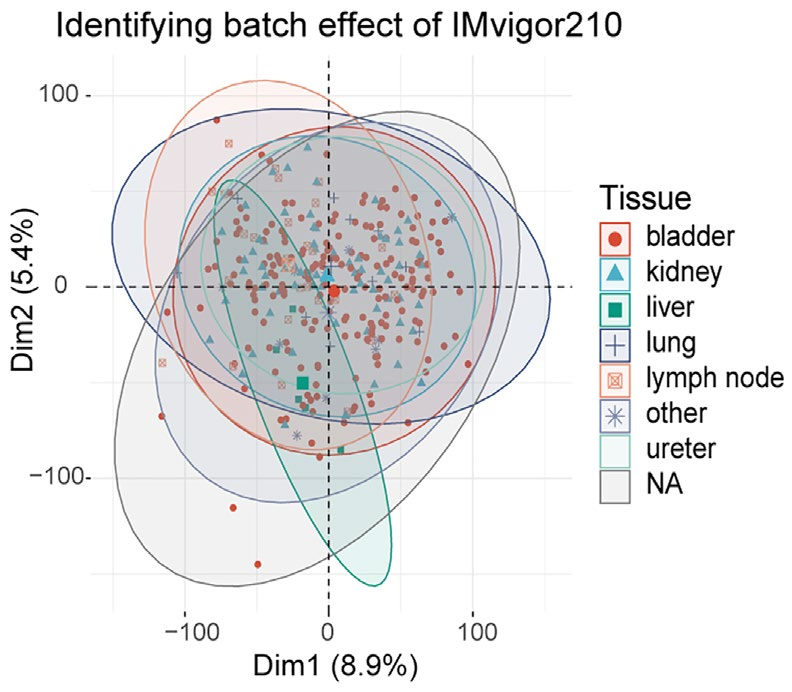
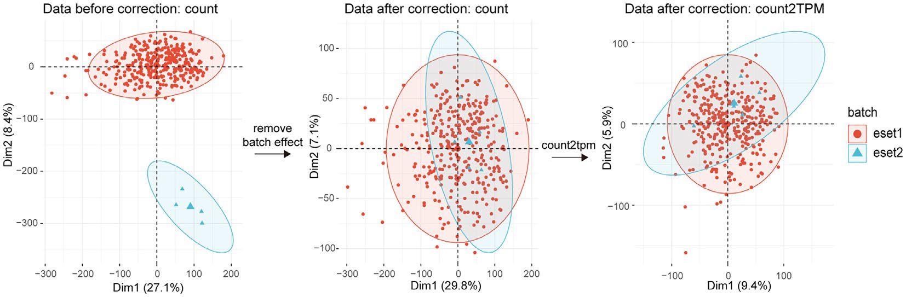
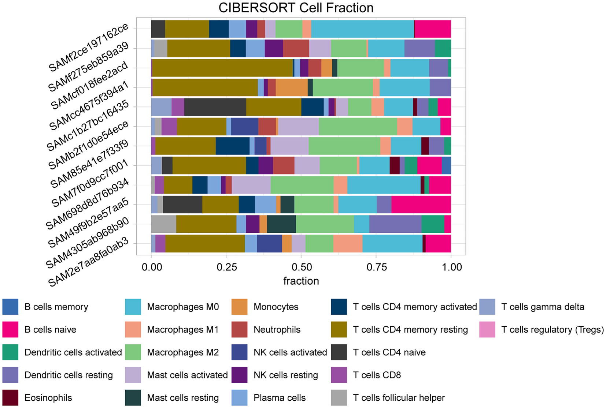
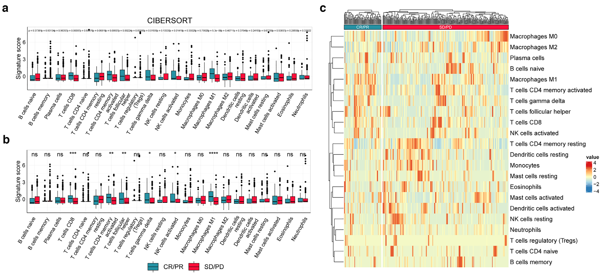
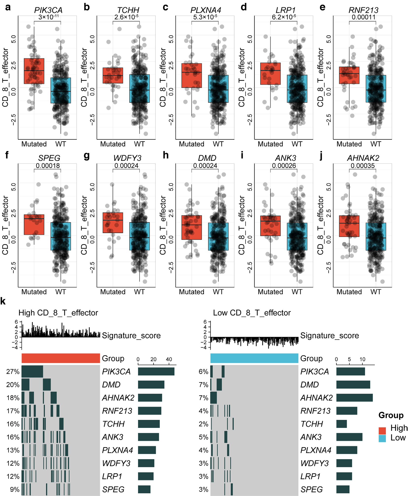
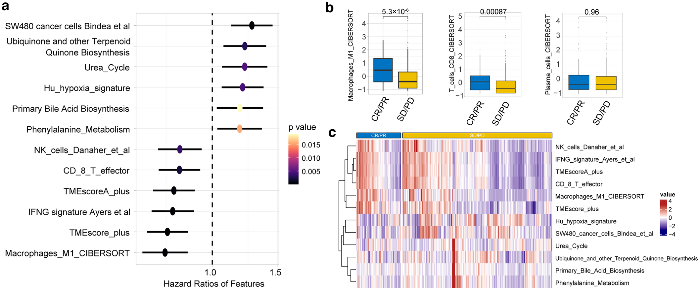
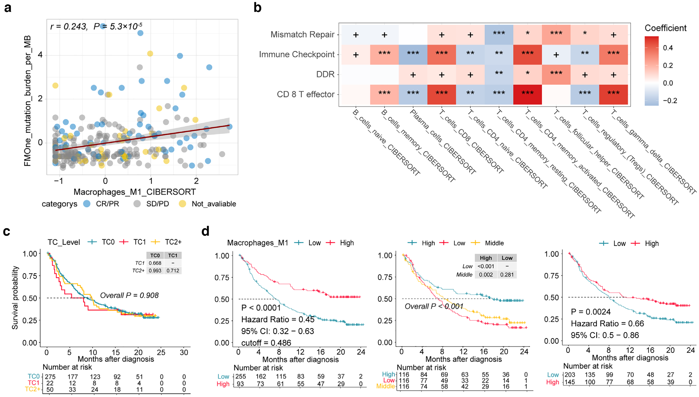

[!一句话版本：这本书的新版，第 11 章是 IOBR。同一本书 2020 年的第 11 章也是我写的，那次讲 GOSemSim。这章是一份能照着敲的 protocol：从 count 矩阵一路到生存曲线，十种反卷积、322 个基因集、813 对 ligand-receptor，都在一个包里。]
2020 年，《Stem Cell Transcriptional Networks》里有一章是我写的，讲 GOSemSim，排在书里的第 11 章。今年这本书出了新版，第 11 章还是我写的，只是内容全换了，主角变成 IOBR。
这是 Springer《Methods in Molecular Biology》系列里的一本，主编还是 Benjamin L. Kidder。MiMB 的每一章都是 protocol，写法和论文不太一样。
论文把“我们做了什么、结果多好”交代清楚就够了。protocol 不行，protocol 是你得把键盘递给读者，让他照着敲一遍还能跑出同样的东西。
所以这一章我们老老实实跑了一条完整流程，从最原始的 count 矩阵开始，annotation、TPM 转换、批次校正，再往后是反卷积、signature 打分、突变关联，一路到生存曲线。
写 protocol 的难处就在这儿，你糊弄不过去。
摘要
The Immuno-Oncology Biological Research (IOBR) package is an R-based analysis tool for exploring the tumor microenvironment (TME) and its influence on anti-tumor immunity. Built for high-throughput data—spanning both transcriptomic and genomic profiles—IOBR integrates six analytical modules, including transcriptomic data preprocessing, TME profiling, TME pattern identification, ligand–receptor interaction analysis, genome–TME interaction assessment, and visualization. In this chapter, we walk through a multi-omics workflow using example datasets, illustrating data preparation, distribution analyses, result interpretation, and graphical output. IOBR is open source and is available at https://github.com/IOBR/IOBR and a detailed GitBook (https://iobr.github.io/book/) offers a complete manual and analysis guide for each function.
六个模块
摘要把 IOBR 拆成六块：转录组数据预处理、TME profiling（反卷积与特征打分）、TME pattern identification（分型聚类）、ligand-receptor 互作、genome-TME 交互，还有可视化。
这个顺序不是随手排的。前面每一步都在给后面准备输入，你把预处理跳过去直接做反卷积，数字照样算得出来，图照样画得出来，只是它是错的。
它不会给你任何提示，这种错最难发现。
两个示例数据
做 protocol 最怕的就是例子太空，所以我们挑了两个公开数据。
一个是 IMvigor210CoreBiologies，里面装了 IMvigor210 这个抗 PD-L1 队列的 bulk RNA-seq、基因组和临床数据，有 response、有 OS，做 TME 的人基本都认识它。
另一个是 10x Genomics 的 pbmc3k，一个健康人的 2700 个 PBMC，用来演示怎么从单细胞数据里造 reference matrix。
单细胞这份得先自己走一遍 Seurat 流程，把 cluster 标成细胞类型，后面 generateRef_seurat 才有东西可用：
data("pbmc3k")
pbmc <- FindVariableFeatures(pbmc3k, selection.method = "vst", nfeatures = 2000)
pbmc <- NormalizeData(pbmc, normalization.method = "LogNormalize", scale.factor = 10000)
pbmc <- ScaleData(pbmc, features = rownames(pbmc))
pbmc <- RunPCA(pbmc, features = VariableFeatures(object = pbmc))
pbmc <- FindNeighbors(pbmc, dims = 1:10)
pbmc <- FindClusters(pbmc, resolution = 0.5)
pbmc <- RenameIdents(pbmc, new.cluster.ids)九个 cluster，从 Naive_CD4_T 到 Platelet 一个个改名，这活儿写论文的时候没人提，写 protocol 就得写进去。
从 count 到 PCA
anno_eset 干的事情是把各种 ID 统一成 gene symbol，Entrez、Ensembl 的 ID，Affymetrix 的探针，它都吃，重复 symbol 用 mean、sd 还是 sum 合并，由 method 参数决定。
接着 count2tpm 转 TPM，log2eset 取 log2，两步走完数据才算干净。
tpm <- count2tpm(countMat = count, idType = "Entrez", org = "hsa")
eset <- log2eset(tpm)TPM 和 RPKM、FPKM 的区别，Note 2 专门写了一段：TPM 同时考虑 read count 和基因长度，适合跨基因比较，RPKM 和 FPKM 就别拿来干这个了。
这类话写在论文里像常识，写在 note 里才是真的有人会看。
find_outlier_samples 用 connectivity z-score 找离群样本，默认阈值 -3，看着不对劲的先剔掉，再拿 iobr_pca 看一眼整体结构：

批次效应是绕不过去的。remove_batcheffect 建在 ComBat 上，把 TCGA-BLCA 和 IMvigor210 两个 cohort 拼在一起，出校正前、校正后、再转 TPM 三张图：

你看第一张，两批样本在 Dim2 上分得干干净净，TCGA 那批单独一坨吊在下面。这种数据直接往下做，算出来的差异很可能只是批次。
校正完第二张就叠在一起了，最后那一步转 TPM 把量纲也统一掉。
拼接之前代码里还有一句 sub("\\..*", "", rownames(eset_blca))，去的是 Ensembl ID 尾巴上的版本号，少了这一句，gene symbol 就对不上。
十种反卷积
deconvo_tme 一个函数里塞了十种反卷积方法（CIBERSORT、SVR、LSEI、ESTIMATE、quanTIseq、TIMER、IPS、MCPCounter、xCell、EPIC），换 method 就换算法，省得你去装十个包、记十套参数名。
cibersort <- deconvo_tme(eset = eset, method = "cibersort", arrays = FALSE, perm = 1000)
cell_bar_plot(input = cibersort[1:12,], features = colnames(cibersort)[2:23],
title = "CIBERSORT Cell Fraction")
如果你手上有注释好的单细胞数据，generateRef_seurat 会自己跑差异分析、挑 marker、把 reference matrix 造出来，再丢回 deconvo_tme（method = "svr" 或者 "lsei"）。
这一步是 IOBR 2.0 之后加进来的，比死抱着 LM22 用要灵活太多。
322 个基因集
内置的 published signatures 有 322 个，分成 TME-associated、tumor-metabolism、tumor-intrinsic 三组，里面还混着 GO、KEGG、HALLMARK、REACTOME 的基因集。
TME 那一组因为数量多，我们按自己的分析经验又分了一层子类，做分析时尽量在同一组里比，结论会稳一些。
calculate_sig_score 一次把分数全算完，三种方法随你挑：ssGSEA、PCA、z-score。
signature_collection <- load_data("signature_collection")
sig_res <- calculate_sig_score(pdata = NULL, eset = eset, adjust_eset = TRUE,
signature = signature_collection, method = "PCA",
mini_gene_count = 2)自己的基因集也能进来：format_signatures 吃 Excel 和 CSV，format_msigdb 吃 MSigDB 下载的 GMT，get_sig_sc 直接把 FindAllMarkers 的结果转成每个细胞类型 top-n 个 marker 的 signature。
算完的分数怎么和表型对上，iobr_cor_plot 一次给你箱线图加热图：

(a)(b) 是 signature 分数在 CR/PR 和 SD/PD 两组之间的比较，(c) 是热图，P 值用双尾 Mann-Whitney U 检验，显著性标得清清楚楚。
这一张基本上就是 TME 类文章的标配 Figure。
从突变到生存
基因组那一头，make_mut_matrix 把 MAF 文件转成 0/1 矩阵，find_mutations 拿它去和 signature score 表比对，用 Cuzick 趋势检验加 Wilcoxon 两组检验，把显著相关的突变基因挑出来。

TCGA-STAD 这个例子里，PIK3CA、TCHH、PLXNA4 这些基因突变与否，和 CD8 T effector signature 的分数差得很明显，OncoPrint 又把高低两组的突变图谱并排摆给你看。
以前这种图要自己写一堆循环，现在两个函数的事。
生存分析这边，batch_surv 一次能拟合一堆 Cox 模型，HR、95% CI、P 值全给你，best_cutoff = TRUE 的话它会先给连续变量找个最佳切点，再按二分类重跑一遍。
结果丢给 sig_forest 就是森林图，sig_box、sig_heatmap 出箱线图和热图：

相关性有 batch_cor、batch_pcc（偏相关，能控混杂因素），单点的有 get_cor，成对的有 get_cor_matrix。生存曲线有 surv_group（按分类变量分组）和 sig_surv_plot（按连续变量，最优切点、均值、三分位三套切法都画给你）：

到这一步，一篇 TME 分析文章的图差不多就凑齐了。
Notes 才是精华
这一章最后有 10 条 Notes，我觉得比正文值钱。
Notes 里塞的都是实打实的问题。annotation 文件到底有哪几个，TPM 为什么比 RPKM 和 FPKM 更适合跨基因比较，离群样本的 z-score 阈值怎么定，PCA 到底能帮你干哪三件事；十种反卷积方法各自的出处，322 个 signature 怎么分组，LR_cal 背后是 EaSIeR 框架加 Ramilowski 的 ligand-receptor 目录（813 对）。还有第 10 条，把 ROC、GSEA、差异分析这些没细讲的功能指到了 GitBook。
Note 7 那条最实在：自己整理 signature 的时候，要按最长的那个对齐，空位全部填 NA，不然读进 R 就报错。
这种话没人愿意写进论文，但它是真的能帮你省一个下午。
最后
章节现在已经上线，正式出版是 2027 年。想上手的话，GitBook 比这一章还详细，每个功能都配了例子：
- 章节链接：https://link.springer.com/protocol/10.1007/978-1-0716-5539-9_11
- 详细教程：https://iobr.github.io/book/
- 代码仓库：https://github.com/IOBR/IOBR
- 前作：文章发表：IOBR2.0：多维度解析肿瘤微环境工具
Citation: Fang Y, Luo Q, Yu G, Zeng D. Systematic Analysis of Tumor Microenvironment Using IOBR. In: Kidder BL, editor. Stem Cell Transcriptional Networks. Methods in Molecular Biology, vol 3074. New York: Humana Press; 2027. p. 173–191. https://doi.org/10.1007/978-1-0716-5539-9_11